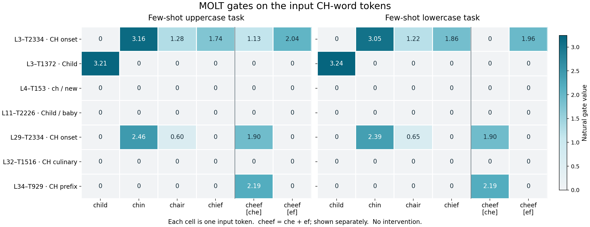

19 October 2026 · five target spellings · two unchanged few-shot templates · seven selected features
Read-only observations in the pinned native Qwen3-4B. Each selected MOLT gate is computed at its own layer from the residual after attention and before post-attention normalization, using the released standardization, encoder and threshold. No output contribution is edited.
At the source child token, L3–T1372 is the only active selected gate: 3.212067 in the uppercase task and 3.243369 in the lowercase task. All five later-layer candidates are inactive at that input position in both tasks.

Numbers are natural thresholded scalar gates. Zero means the released gate is inactive, not that its raw preactivation or all relevant model information is zero. Raw gate scales across transforms are not calibrated measures of causal importance. cheef splits into che and ef; no average, sum or maximum hides that distinction.
| Feature | Gate label hypothesis | Active source subtokens | Source subtokens measured | Maximum source gate | child: uppercase task | child: lowercase task |
|---|---|---|---|---|---|---|
| L3-T2334 | Ch-Initial Word Onset | 9 | 12 | 3.156116 | 0.000000 | 0.000000 |
| L3-T1372 | Token child in personal or familial contexts | 2 | 12 | 3.243369 | 3.212067 | 3.243369 |
| L4-T153 | Substring "ch" or "new" | 0 | 12 | 0.000000 | 0.000000 | 0.000000 |
| L11-T2226 | Child and Baby Token Activation | 0 | 12 | 0.000000 | 0.000000 | 0.000000 |
| L29-T2334 | Initial "Ch" Word Onset | 6 | 12 | 2.462609 | 0.000000 | 0.000000 |
| L32-T1516 | Culinary and Proper Noun "Ch" Word Starts | 0 | 12 | 0.000000 | 0.000000 | 0.000000 |
| L34-T929 | Bigram "ch" Prefix Gate | 2 | 12 | 2.188789 | 0.000000 | 0.000000 |
The new unhooked generations reproduce every earlier baseline, including any earlier mistakes. Hooked observation replays reproduce all native output token IDs.
| Case | Actual native answer | Expected letters |
|---|---|---|
| fewshot_upper_child | CH | CH |
| fewshot_upper_chin | CH | CH |
| fewshot_upper_chair | CH | CH |
| fewshot_upper_chief | CH | CH |
| fewshot_upper_cheef | CE | CH |
| fewshot_lower_child | child: ch | ch |
| fewshot_lower_chin | chin: ch | ch |
| fewshot_lower_chair | ch | ch |
| fewshot_lower_chief | chief: ch | ch |
| fewshot_lower_cheef | cheef: ch | ch |
This compares child with four other CH-starting spellings, including the nonce cheef. It has no non-CH control group and does not establish broad CH selectivity. Gate presence does not identify what a transform writes. Gate absence does not show that the model lacks CH information or cannot compute it elsewhere.
The main figure measures the input word only. Additional traces below include the prompt-final prediction position and already generated answer tokens. A gate measured while processing an emitted CH/ch token cannot explain choosing that same token.
Give the first two letters of each word in uppercase. garden: GA window: WI table: TA child:
Native answer: CH
| Segment | Position | Token | L3-T2334 | L3-T1372 | L4-T153 | L11-T2226 | L29-T2334 | L32-T1516 | L34-T929 |
|---|---|---|---|---|---|---|---|---|---|
| prompt | 27 | 'child' | 0.000000 | 3.212067 | 0.000000 | 0.000000 | 0.000000 | 0.000000 | 0.000000 |
| prompt | 37 | '\n\n' | 0.000000 | 0.000000 | 0.000000 | 0.000000 | 0.000000 | 0.000000 | 0.000000 |
| answer | 38 | 'CH' | 0.000000 | 0.000000 | 1.603438 | 0.000000 | 1.310910 | 0.000000 | 0.996668 |
Give the first two letters of each word in uppercase. garden: GA window: WI table: TA chin:
Native answer: CH
| Segment | Position | Token | L3-T2334 | L3-T1372 | L4-T153 | L11-T2226 | L29-T2334 | L32-T1516 | L34-T929 |
|---|---|---|---|---|---|---|---|---|---|
| prompt | 27 | 'chin' | 3.156116 | 0.000000 | 0.000000 | 0.000000 | 2.462609 | 0.000000 | 0.000000 |
| prompt | 37 | '\n\n' | 0.000000 | 0.000000 | 0.000000 | 0.000000 | 0.000000 | 0.000000 | 0.000000 |
| answer | 38 | 'CH' | 0.000000 | 0.000000 | 1.636848 | 0.000000 | 1.022801 | 0.000000 | 0.000000 |
Give the first two letters of each word in uppercase. garden: GA window: WI table: TA chair:
Native answer: CH
| Segment | Position | Token | L3-T2334 | L3-T1372 | L4-T153 | L11-T2226 | L29-T2334 | L32-T1516 | L34-T929 |
|---|---|---|---|---|---|---|---|---|---|
| prompt | 27 | 'chair' | 1.282969 | 0.000000 | 0.000000 | 0.000000 | 0.604731 | 0.000000 | 0.000000 |
| prompt | 37 | '\n\n' | 0.000000 | 0.000000 | 0.000000 | 0.000000 | 0.000000 | 0.000000 | 0.000000 |
| answer | 38 | 'CH' | 0.000000 | 0.000000 | 1.254722 | 0.000000 | 1.737980 | 0.000000 | 1.533936 |
Give the first two letters of each word in uppercase. garden: GA window: WI table: TA chief:
Native answer: CH
| Segment | Position | Token | L3-T2334 | L3-T1372 | L4-T153 | L11-T2226 | L29-T2334 | L32-T1516 | L34-T929 |
|---|---|---|---|---|---|---|---|---|---|
| prompt | 27 | 'chief' | 1.741242 | 0.000000 | 0.000000 | 0.000000 | 0.000000 | 0.000000 | 0.000000 |
| prompt | 37 | '\n\n' | 0.000000 | 0.000000 | 0.000000 | 0.000000 | 0.000000 | 0.000000 | 0.000000 |
| answer | 38 | 'CH' | 0.000000 | 0.000000 | 1.284698 | 0.000000 | 1.614174 | 0.000000 | 1.374897 |
Give the first two letters of each word in uppercase. garden: GA window: WI table: TA cheef:
Native answer: CE
| Segment | Position | Token | L3-T2334 | L3-T1372 | L4-T153 | L11-T2226 | L29-T2334 | L32-T1516 | L34-T929 |
|---|---|---|---|---|---|---|---|---|---|
| prompt | 27 | 'che' | 1.125206 | 0.000000 | 0.000000 | 0.000000 | 1.901473 | 0.000000 | 2.185281 |
| prompt | 28 | 'ef' | 2.043269 | 0.000000 | 0.000000 | 0.000000 | 0.000000 | 0.000000 | 0.000000 |
| prompt | 38 | '\n\n' | 0.000000 | 0.000000 | 0.000000 | 0.000000 | 0.000000 | 0.000000 | 0.000000 |
| answer | 39 | 'CE' | 0.000000 | 0.000000 | 0.000000 | 0.000000 | 0.000000 | 0.000000 | 0.000000 |
Give the first two letters of each word in lowercase. garden: ga window: wi table: ta child:
Native answer: child: ch
| Segment | Position | Token | L3-T2334 | L3-T1372 | L4-T153 | L11-T2226 | L29-T2334 | L32-T1516 | L34-T929 |
|---|---|---|---|---|---|---|---|---|---|
| prompt | 27 | 'child' | 0.000000 | 3.243369 | 0.000000 | 0.000000 | 0.000000 | 0.000000 | 0.000000 |
| prompt | 37 | '\n\n' | 0.000000 | 0.000000 | 0.000000 | 0.000000 | 0.000000 | 0.000000 | 0.000000 |
| answer | 38 | 'child' | 0.000000 | 2.856124 | 0.000000 | 0.000000 | 0.000000 | 0.000000 | 0.000000 |
| answer | 39 | ':' | 0.000000 | 0.000000 | 0.000000 | 0.000000 | 0.000000 | 0.000000 | 0.000000 |
| answer | 40 | ' ch' | 0.000000 | 0.000000 | 1.829408 | 0.000000 | 0.000000 | 0.000000 | 0.000000 |
Give the first two letters of each word in lowercase. garden: ga window: wi table: ta chin:
Native answer: chin: ch
| Segment | Position | Token | L3-T2334 | L3-T1372 | L4-T153 | L11-T2226 | L29-T2334 | L32-T1516 | L34-T929 |
|---|---|---|---|---|---|---|---|---|---|
| prompt | 27 | 'chin' | 3.049832 | 0.000000 | 0.000000 | 0.000000 | 2.391985 | 0.000000 | 0.000000 |
| prompt | 37 | '\n\n' | 0.000000 | 0.000000 | 0.000000 | 0.000000 | 0.000000 | 0.000000 | 0.000000 |
| answer | 38 | 'chin' | 3.297174 | 0.000000 | 0.000000 | 0.000000 | 0.000000 | 0.000000 | 0.000000 |
| answer | 39 | ':' | 0.000000 | 0.000000 | 0.000000 | 0.000000 | 0.000000 | 0.000000 | 0.000000 |
| answer | 40 | ' ch' | 0.000000 | 0.000000 | 1.946340 | 0.000000 | 0.000000 | 0.000000 | 0.000000 |
Give the first two letters of each word in lowercase. garden: ga window: wi table: ta chair:
Native answer: ch
| Segment | Position | Token | L3-T2334 | L3-T1372 | L4-T153 | L11-T2226 | L29-T2334 | L32-T1516 | L34-T929 |
|---|---|---|---|---|---|---|---|---|---|
| prompt | 27 | 'chair' | 1.224479 | 0.000000 | 0.000000 | 0.000000 | 0.647144 | 0.000000 | 0.000000 |
| prompt | 37 | '\n\n' | 0.000000 | 0.000000 | 0.000000 | 0.000000 | 0.000000 | 0.000000 | 0.000000 |
| answer | 38 | 'ch' | 0.000000 | 0.000000 | 1.473327 | 0.000000 | 1.469032 | 0.000000 | 1.523181 |
Give the first two letters of each word in lowercase. garden: ga window: wi table: ta chief:
Native answer: chief: ch
| Segment | Position | Token | L3-T2334 | L3-T1372 | L4-T153 | L11-T2226 | L29-T2334 | L32-T1516 | L34-T929 |
|---|---|---|---|---|---|---|---|---|---|
| prompt | 27 | 'chief' | 1.863913 | 0.000000 | 0.000000 | 0.000000 | 0.000000 | 0.000000 | 0.000000 |
| prompt | 37 | '\n\n' | 0.000000 | 0.000000 | 0.000000 | 0.000000 | 0.000000 | 0.000000 | 0.000000 |
| answer | 38 | 'chief' | 2.330351 | 0.000000 | 0.000000 | 0.000000 | 0.000000 | 0.000000 | 0.000000 |
| answer | 39 | ':' | 0.000000 | 0.000000 | 0.000000 | 0.000000 | 0.000000 | 0.000000 | 0.000000 |
| answer | 40 | ' ch' | 0.000000 | 0.000000 | 1.581767 | 0.000000 | 0.000000 | 0.000000 | 0.000000 |
Give the first two letters of each word in lowercase. garden: ga window: wi table: ta cheef:
Native answer: cheef: ch
| Segment | Position | Token | L3-T2334 | L3-T1372 | L4-T153 | L11-T2226 | L29-T2334 | L32-T1516 | L34-T929 |
|---|---|---|---|---|---|---|---|---|---|
| prompt | 27 | 'che' | 0.000000 | 0.000000 | 0.000000 | 0.000000 | 1.903779 | 0.000000 | 2.188789 |
| prompt | 28 | 'ef' | 1.961384 | 0.000000 | 0.000000 | 0.000000 | 0.000000 | 0.000000 | 0.000000 |
| prompt | 38 | '\n\n' | 0.000000 | 0.000000 | 0.000000 | 0.000000 | 0.000000 | 0.000000 | 0.000000 |
| answer | 39 | 'che' | 0.918209 | 0.000000 | 0.000000 | 0.000000 | 1.311484 | 0.000000 | 0.823032 |
| answer | 40 | 'ef' | 2.136863 | 0.000000 | 0.000000 | 0.000000 | 0.000000 | 0.000000 | 0.000000 |
| answer | 41 | ':' | 0.000000 | 0.000000 | 0.000000 | 0.000000 | 0.000000 | 0.000000 | 0.000000 |
| answer | 42 | ' ch' | 0.000000 | 0.000000 | 1.621796 | 0.000000 | 0.000000 | 0.000000 | 0.000000 |
Vector figure · Input-token values CSV · All observed token values CSV · Independent verification · Summary · Full measurements